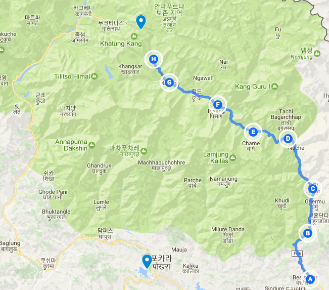
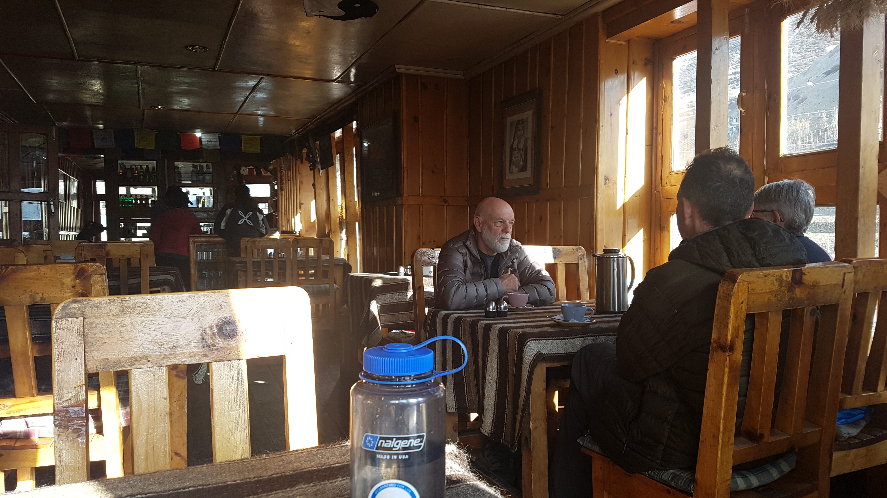
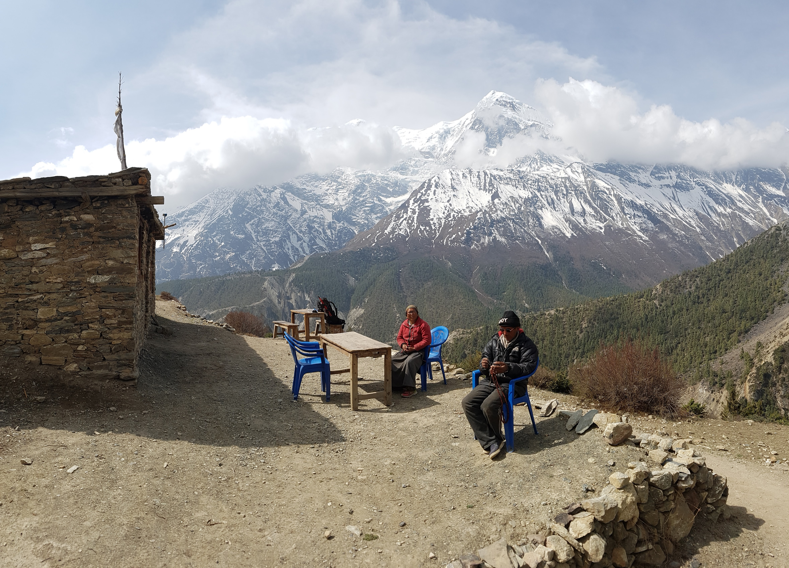
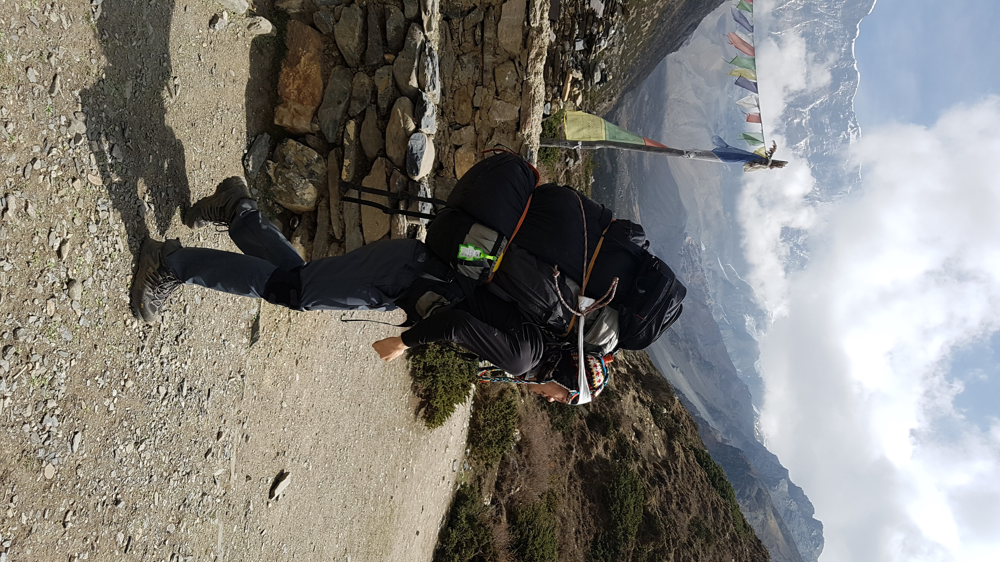

layout: post
title: Cloud makes another view.
subtitle: "여행 D+16, 안나푸르나 D+8"
date: 2017-04-19 12:00:10
tags: 포스팅
header-img: img/post-travel-16.jpg
오늘 이동한 경로 (G) -> (H) (총 9km)
Manang(3540) -> Yak Khalka(4050)

이곳에 길은 하나다
드디어 마낭을 떠나는 날 긴장된다. 이제부터 정말 힘든 코스가 시작돤다. 기상했을때 살짝 두통이 있었다. 아마 수면시 충분한 호흡을 하지 못해서 그런것 같다.
아침 식당에서 트래킹을 준비하는 할머니 할아버지들을 봤다. 육체적으로 힘들텐데 대단한 사람들 같이 느껴진다. 내가 노인이되면 어떤 사람이될까. 이들처럼 끝까지 탐험정신과 호기심을 잃지 않는 노인이 되고싶다. 
나는 휴직을 한지 몇달전부터 응가 자세 훈련을 해왔다. 막연히 최악의 화장실에서도 대변을 잘 봐야한다는 생각을 했다. 나는 어릴때부터 쪼그려 앉아서 대변을 보기어려웠다. 그래서 스트레칭을 하면서 쪼그려앉는 훈련을 수시로 했다. 순전히 어디서나 응가를 잘 하기 위해서였다.
이곳 네팔에도 역시 쪼그려앉는 변기로 되어있다. 다행인것은 완전 푸세식은 아니고 흰색 변기로 되어있다는 사실이다. 문제는 그렇게 훈련했는데 아직도 응가하는 시간이 힘들다는 것이다. 가끔 좌변기를 만나기도 하는데 그 드러운데 엉덩이를 데고 앉기 싫어서 그냥 수세식 변기를 사용한다. 언젠간 편해지는 날이 오겠지. 한가지 더. 패트릭에게 "나 똥을 싼다." 라는 영어 표현을 배웠다. "I am taking a shit" 이렇게 말하면 된다.
이 안나푸르나 써킷 트레킹에 단순히 멋진 경치만을 기대 하고 온사람은 실망할수도 있겠다는 생각이 들었다. 대부분의 걷는 코스는 숲길이 아니다. 차가 많이 지나다니는 비포장 도로다. 먼지가 무척많다. 생각보다 자주 지프차가 지나가는데 그때마다 먼지가 무척 날려 짜증이 난다. 화장실은 구리고 냄새도 많이 난다. 매일같이 뜨거운 물 샤워를 하기도 쉽지 않으며, 매일매일 직접 속옷과 양말등을 세탁해야한다. 하루에 10km이상을 걷는데 온몸이 쑤시고 힘들다. 고산병 때문에 힘든 시간을 보낼 수도 있다.
이곳에 길은 하나다. 이곳에 오기 이전에 어떤 삶을 살았는지는 몰라도 모두 같은 길을 걷고 힘든 시간을 겪어야한다. 위에서 언급한 모든 불편함들은 여기온 모든사람들이 겪는것이다. 그냥 멋진 산만 구경하러 온사람이라면 굳이 처음부터 힘들게 걸을 필요 없이, 지프차를 타고 최대한 높이 올라서 고개를 넘고 다시 지프차를 타고 돌아가는게 낫다. 모두 같은 길을 걷지만 어떤것을 느끼고 경험하는지는 사람마다 천지 차이다. 나는 그 동일한 환경속에서 더 많은 것들을 얻어낼 수 있을까? 그것은 결국 내 마음가짐에 달려있다. 나는 이곳을 어떤 수련의 장소로 생각하고자 한다. 그러니 이 모든 불편들을 기꺼이 받아드릴수 있다.
 올라가는 길에 만난 현지 어르신들과 그들의 집, 이런경치를 가진 곳에서 사는 느낌은 어떨까.
 포터들이 메는 짐을 한번 들어봤다. 1분도 메고 있기 힘들다. 이걸 어떻게 들고 올라가나 신기하다
L 선생님과의 만남
여기 산에서 정말 건강해지는 느낌이다. 물도 정말 많이 마시고 운동도 많이하고 하루 먹는 양도 어마어마하다. 그리고 응가도 잘 싼다.
마낭에서 오늘 목적지인 yak kharka로 가는 길에 어디서 많이 본 분을 발견했다. 윈드폰 게스트 하우스에서 나보다 하루 먼저 출발하신 한국인 L (60세)을 우연히 만났다. 게스트하우스에서는 서로 대화를 해본적이 없었다. 여기서 처음 이야기 하게 되었다.
이분은 자전거로 세계여행을 하는 중이다. 시작한지는 100일이 넘었다고 한다. 인도에서 네팔로 자전거를 타고 넘어오셨다고 한다. 지금 까지 총 42개국을 여행한 베테랑 여행자이기도 하다.
이 분은 내가 8일동안 이 안나푸르나 트레킹중 만난 수많은 사람중에서 가장 이 안나푸르나를 즐기고 있었다. 매 순간순간 산의 모습에 감탄하는 모습이 인상적이었다. 아주 작은 변화에서도 아름다움을 느끼고 경탄을 자아낼 수 있는 사람이었다. 오랫만에 만난 한국인이었기에 서로 엄청 즐겁게 이야기할 수 있었다.
이분은 전직 논술강사였기 때문에 수많은 인문학적 지식을 가지고 계셨다. 여러가지 이야기들을 서로 이야기하고 토론했는데 산을 오르는 것이 힘든것도 잊어먹고 대화에 빠져들었다. 이런 어른은 처음만났다. 정말 두고두고 가르침을 받고 싶은 선생님을 만난 기분이었다.
그중 내가 깊게 인상받았던 가르침은 세가지를 피하라는 것이다. 첫번째는 자본 바이러스, 두번째는 이념 바이러스, 세번째는 종교 바이러스이다. 이중 세번째가 가장 최악이라는데는 나도 최근 많은 생각을을 했기때문에 깊게 공감했다. 종교는 인류역사에서 순전히 기득권층의 이익과 하층민의 희생을 정당화 하는데 쓰였다. 특히 내세라는 개념은 하층민이 전혀 불만을 갖지 않게 만드는 최악의 개념이다. 평소 불만을 갖고 있었던 것들을 이 분을 통해서 이야기하니 무척 통쾌했다. 칼 맑스가 종교는 인류의 아편이라고 말한 이유가 바로 이것이라고 말했다.
걷다가 뒤를 봤는데 멋진 장관이 펼쳐졌다. 근데 아까 봤던 산이긴 하다. 근데 이분이 하는 말이 인상적이었다. "Cloud makes another view" 나는 똑같은 산으로 생각했는데 이분은 구름과 어우러진 산을 또 다른 경치로 받아들인 것이다. 놀라웠다. 이사람은 진정으로 안나프르나를 즐기고 있었다. 작은 차이에서 만들어지는 아름다움을 구분했다.
이분은 선험적 실패라는 개념을 주장 하셨다. 시도해보지도않고 포기하지 말고 미리 경험을 통해 실패를 경험해보라는 것이다. 나도 막연히 여행하며 일하는것을 생각해보고 있는데, 이분이 그냥 도전해보면 되지 않냐고 용기를 주셨다. 그렇다. 못할 이유가 무엇이있나? 내가 배워야할 것이 있으면 배워서 도전하면 된다. 할수 있다. 나도 언젠가 여행을 다니면서 일할 수 있을까? 그런날이 온다면 정말 짜릿할것 같다.
이분과의 대화가 너무 즐거웠고, 한국인 어르신중에 이런분이 있다는 사실에 나는 무척 고무되었다. Yak kharka에 도착한 나는 이분을 패트릭과 타쿠어에게 소개해주고 싶어졌다. 그리고 같이 커피를 한잔했는데 이분은 역시 거침없이 백인들과 대화 하셨다. 왠지 모르게 내가 다 뿌듯했다. 일반적인 한국인과는 다르게 외국인친구 사귀는데 거침이 없고 대화를 정말 잘 하신다. 사람에대란 호기심이 기본적으로 많으신 분 같다. 사람에 대한 호기심. 이것이 새 친구를 사귀는데 가장 필요한 것인것 같다.
오늘 짦은 시간이었지만 이분에게 정말 많은것들을 배웠다. 헤어지기 싫을 정도였다. 힘든 걷는구간이 정말 즐겁게 지나갔다. 아마 우리는 묵티나트에서 다시 만날것이다. 그리고 카톡 친구 신청을해서 나중에 기회가 된다면 다시한번 만나뵙고 싶다.
고산적응을 위해 100미터 정도 높이 올라가보기로 하다. 그리고 경이로움을 경험하다.
아까 L이 내게 롯지에 도착한 뒤에 한 100미터 정도 언덕에 올라갔다가 내려오는것이 고산 적응에 도움이 된다고 했다. 마침 이 yak kharka 옆에는 완만해보이는 언덕이 있었다. 그래서 점심을 먹고 잠시 쉰 뒤에 올라가 보기로 했다. 패트릭에게 같이 가지 않겠냐고 했는데 결국 패트릭은 춥다고 가지 않기로 했다.
언덕에 오르는 길은 생각보다 어려웠다. 생각보다 완만하지 않았다. 게다가 사람이 많이 다니지 않은 언덕이라 길도 없었다. 약 45도의 경사를 가진 미끄러지기 쉬운 그 길을 최대한 조심조심 올라갔다. "Step gentlely" 를 계속 떠올리며 한발한발 정성스럽게 올랐다.
고도가 궁금했던 나는 핸드폰의 고도계 센서가 있다는 사실을 깨닫고 높이를 확인해봤다. 모든 삼성폰은 통화 버튼 -> #-#을 누르면 히든 모드에 접속할 수 있는데 거기서 각종 센서 정보를 확인 할 수 있다. 고도계를 확인해보니 오르기 전에 3924m 였고 한 15분정도 오르니 50m더 오를 수 있었다. 고산에 따른 두통은 아직 없었다.
조금 더 올라갔다. 잠시 서서 풍경을 보았다. 며칠동안 안나푸르나를 올라오면서 경험한 다른 풍경에 비하면 그닥 멋지진 않았다. 아까 L이 말했던 "Cloud makes another view" 를 떠올렸다. 오른쪽에 있는 설산에는 안개같은 구름이 끼어있었다. 구름은 분명히 사소하지만 산의 모습을 다르게 만들었다. 나도 그 작은 차이를 느껴보려고 했다. 아주 사소한것 에서 이전과 다른 새로운 아름다움을 느껴보려고 노력했다.
그곳은 언덕이라 바람이 무척 많이 불었다. 차갑고 강한 바람이다. 방금 전까지 차갑기만 하던 바람을 다시 느껴보았다. 그 차가운 바람속에서 아름다움을 느끼고 싶었다. 그 순간 나도모르게 내가 이 거대한 산맥속에 바람과 구름과 이 언덕의 일부분이라는 느낌이 들었다. 나도 그것들과 같이 이 지구를 구성하는 하나의 구성물처럼 느껴졌다.
그 때 어떤 경이로움을 느껴졌다. 갑자기 벅찬 감동이 몰려왔다. 감정이 고조되어 눈물이 나왔고 결국 흐느끼며 울었다. 내가 이 거대한 자연의 일부가 된 느낌이었다. 이 순간에 나를 포함해서 이 모든것들이 하나처럼 느껴졌다. 산이 드디어 나를 허락해 준것 같은 느낌이 들었다.
그것은 정말 놀라운 경험이었다. 윈드폴 게스트하우스에 처음 묶었을때 사람들과의 대화가 떠올랐다. 자연과 하나가 되는 경이로움을 느끼는것. 그때만해도 그게 어떤느낌인지 잘 몰랐는데 지금 이 순간에 깨닫게 된 것이다. 그 감정에 머물렀다. 그리고 계속 산으로 오르는데 눈물이 멈추지 않았다.
그때 깨달았다. 경이로움을 느끼기 위해서 특별하고 멋진 장면이 필요하지 않다는 사실이다. 나는 엄청난 경치에 압도되어 눈물을 흘린것이 아니었다. 그저 평범한 장면과 그 순간에 존재하는 아름다움을 극대화해서 느꼈던 것이다.
나는 조금더 침착해 지기로 하고 언덕을 계속 올랐다. 센서값을 보니 4050m 였다. 약 130미터 정도를 올라온 것이다. 이정도면 충분히 조금더 높은 고산을 경험했고 도움이 되었다고 생각했다. 그 위치에서 고산 증상도 없었다. 지도상에 따르면 나는 지금 4180m까지 올라 온것이다. (핸드폰 고도계에 오차가 있는듯 하다)
하산을 시작했다. 작은 가시나무들과 사람이 내려갈 수 있는 길을 찾으며 힘들게 내려갔다. 생각보다 하산이 너무 어려웠다. 길이 없었기 때문이다. 고군분투한 끝에 지면에 도착했다. 어려워서 그런지 몰라도 성취감이 많이 느껴졌다.
다시 Yak kharka에 도착하니, 야크들이 들판에서 풀을뜯고 았었다. 평화로웠다. 누군가 한 야크로 다가갔다. 그는 손을 올렀다. 야크도 고개를 들고 그 사람에게 다가갔다. 짧은 시간동안 그 사람과 야크의 교감이 있었다. 아름다웠다. 자연과 인간의 교감같이 느껴졌다. 그때 느꼈다. 이런 사소한것에서 아름다움을 느끼면 되는 거구나. 이렇게 하는거구나. 그냥 어떤 사람이 야크를 쓰다듬었던 평범한 장면이었지만 나는 거기서 아름다움을 느꼈던 것이다.
오늘도 저녁을 먹기전에 카드게임을 했다. 내가 또졌다. 나는 진짜 카드게임을 못하는것같다.. 그래도 다들 정말 웃으면서 즐겁게 게임했는데 내가 외국넘들을 이렇게 웃길수 있다는 사실에 자신감이 생겼다.
수 일을 계속 이동하면서 롯지에서 보였던 아시아인 여자애 두명이 있었다. 그들은 매우 수줍음이 많은것같아서 그 둘 이외에 아무도 이야기하려고 하지 않는것 같았다. 나머지 사람들은 서로 쉽게 친구가 되는데 그들은 항상 그들끼리만 이야기 했다. 그래서 오늘 기회가 되서 그들과 이야기를 해봤다.
처음에는 중국인인줄 알았는데 그들은 말레이시아인 이었다. 나는 말레이시아에 대해 잘 모르기 때문에 내가 가진 고정관념으로는 그들이 여행을 많이 안할거라고 생각했는데 이곳에서 말레이시아인을 만나서 너무 반가웠다. 동양인을 보기 너무 힘들기 때문이다.
그들과 대화하는데 영어를 무척 잘했다. 조금만 더 자신감을 가지고 여기있는 서양인들과 대화하려고 노력했다면 쉽게 친해질 수 있었읋 텐데 아쉬웠다. 그들도 분명 내가 느꼈던 감정을 느겼을 것이다. 백인들 끼리 있을때 거기에 동양인으로써 끼어들기 쉽지 않다는것이다. 나는 다행이 이제 그 두려움을 상당부분 극복한것 같다. 아까도 백인들에 둘려쌓여 많은 이야기들을 했다. 영어를 못해도 생각나는 대로 더듬더듬 말할 수 있다. 아무튼 새로운 나라의 친구를 만나서 좋았다. 다음에 또 만나면 페이스북 친구를 먹어야겠다.